附加品
共 981 个附加品 · 第 3/7 页
| 名称 | 稀有度 | 效果 | 所属 |
|---|---|---|---|
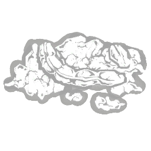 腐烂尸块 Festering Carrion |
罕见 | 一堆令人反胃的肉和内脏，却能吸引饥饿的乌鸦前来啄食。发射厄鸦后，苦难鸟的冷却时间减少-0.5秒。 | 艺术家 |
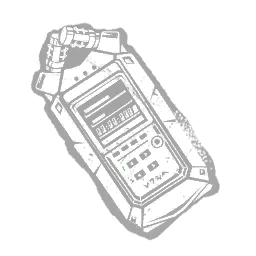 田野录音机 Field Recorder |
传说 | 哈蒂记录下了她在重叠地带附近的所有探索，以此向世界、也向自己证明她所见、所感的一切。使该试炼以夜幕开始。当最后一名_generator_逃生者接触残影后陷入疲惫状态效果达 15 秒时，夜幕将自动激活。 | 深潜者 |
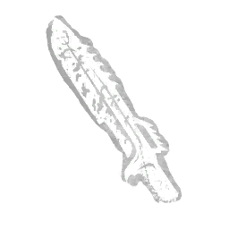 肮脏刀片 Filthy Blade |
传说 | 这把刀刃上沾染着恶臭的血迹与污垢，令伤口格外难以愈合。逃生者的自愈时间 +4秒。 | 军团 |
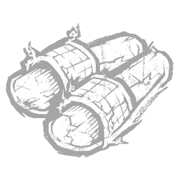 肮脏拖鞋 Filthy Slippers |
传说 | 马克斯有时难以听清母亲的脚步声。维持电锯冲刺至少 2 秒后，获得无法侦测状态效果，直到停止冲刺。 | 电锯莽夫 |
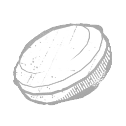 细磨石 Fine Stone |
罕见 | 图标 描述 花费 此附加品已退役（此可解锁物品已在过去退役，不再存在于当前游戏中。）这个圆盘状的磨刀工具可用于磨利... | 女猎手 |
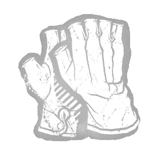 无指游行手套 Fingerless Parade Gloves |
稀有 | “作为小丑标准服装的一部分，这些被切下的手指使其能够进行灵巧操作。”改装瓶子，产生以下效果：使其投掷速度提高 #effect(1)。使其投掷角度降低 #effect(2)。 | 小丑 |
| 第一部剧本 First Libretto | 稀有 | "她觉得自己仿佛踏空而行，只因在自己的第一部歌剧中获得了角色。" 每当你钩住一名受到“水蛭”状态影响的逃生者，你将获得以下效果：15 秒内，“Headlong Flight”的消耗速率降低 -30%。 | 浮屠鬼 |
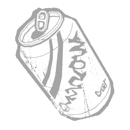 气泡汽水 Fizz-Spin Soda |
精贵 | 用于宣传 NO SPIN 的限量版汽水罐。高糖、高咖啡因。将提升投掷速度所需的刀刃投掷次数减少2次。 | 小丑女 |
| 闪光粉 Flash Powder | 稀有 | 此附加品未使用，描述未知。使障目持续时间增加10%。 | |
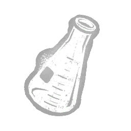 一瓶漂白剂 Flask of Bleach |
精贵 | 一种效力强劲的化学物质，可引起刺激、灼伤与肺部损伤。改装药剂后获得以下效果：使受阻状态效果的强度降低 -2% 至 -16%。 | 小丑 |
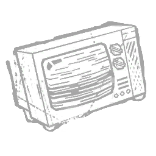 闪烁的电视 Flickering Television |
罕见 | 一台在修道士们到来后行为异常的电视机。使传送门的最大施法距离增加 +4 米。 | 地牢修女 |
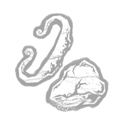 打火石与钢 Flint and Steel |
传说 | 夜间袭击并不罕见。恐惧往往是他们最大的盟友。召唤“刽子手”会产生以下效果：未破坏木板周围24米内逃生者的气场暴露8秒。 | 骑士 |
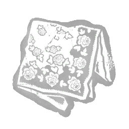 花头巾娃娃 Flower Babushka |
精贵 | 一块干净、色彩鲜艳、带有花卉图案的手帕。这段对失去的小家伙的回忆让女猎手充满愤怒与专注。飞斧的蓄力时间减少0.1秒。 | 女猎手 |
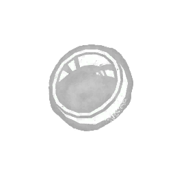 聚光镜 Focus Lens |
罕见 | 一片厚玻璃镜片，可聚焦手电筒光束以增强其强度。光束射程增加 +25%。亮度增加 +20%。成功致盲的持续时间增加 +10%。光束宽度减少 -15%。 | |
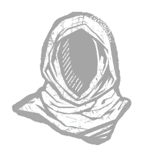 追随者兜帽 Follower's Cowl |
稀有 | 他们以为兜帽能证明自己的开悟，却只不过让自己留在了黑暗中。白昼期间返回残影会触发杀手直觉。 | 深潜者 |
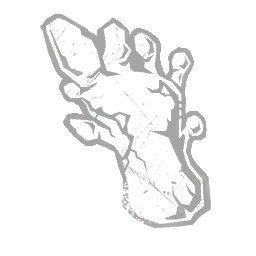 足迹石膏 Footprint Cast |
精贵 | “演员们坐在佛罗里达州萨拉索塔的怪奇博物馆里，这套说法早已被揭穿。”每当逃生者进入虚弱状态时，足迹投射触发其效果：下一次幻觉的生成计时器减少15秒。 | 未知者 |
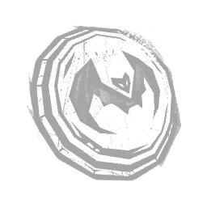 回响之力 Force of Echo |
精贵 | 让蝙蝠在黑暗中拥有更敏锐感官的神器。修改气味球，效果如下：增加其生成率 +10%。 | 黑暗领主 |
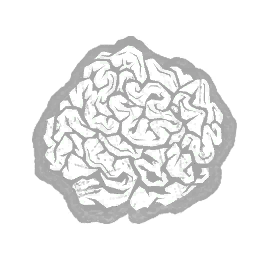 异国植物纤维 Foreign Plant Fibres |
传说 | 异星植物学家看到这些奇异的异星植物样本定会乐此不疲。将被木板撞晕后的移动速度惩罚持续时间减少-20%。 | 奇点 |
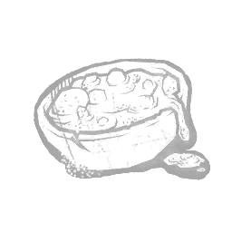 森林炖菜 Forest Stew |
传说 | 用采集的蔬菜与苔藓、树皮混合炖成的汤，以制造虚假的饱腹感。操控维克多时，你的移动速度增加+0.6米/秒。“吃吧……吃吧，孩子。咽下去就会好受些。”——玛德琳·德谢 | 双胞胎 |
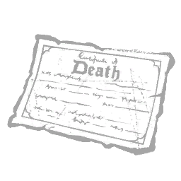 伪造死亡证明 Forged Death Certificate |
精贵 | "一张用来证明某位明明还活着的权势人物已死的纸。" 作用于藤蔓攻击，具有以下效果：对任意逃生者施加破界标记时，凶手会获得不可探测状态效果，直至下次破界模式激活。 | 先驱者 |
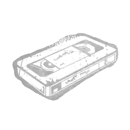 被遗忘的录像带 Forgotten Videotape |
罕见 | 一卷两位恋人在寂静岭度假的录像带。尽管具有纪念价值，它却被遗弃在了湖景酒店。修改“厄咒：天罚打击”：将其飞行速度提高+10%。 | 刽子手 |
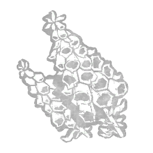 毛地黄 Foxglove |
稀有 | 一种激发塔尔博特对化学兴趣的有毒植物。它重新燃起深埋的记忆。疲劳持续时间减少 -0.25 秒。 | 枯萎者 |
| 福克斯的钩爪 Foxy's Hook | 精贵 | 「一把海盗钩，看起来更具威胁而非嬉戏意味。」处于消防斧的作用范围内时，玩家获得以下效果：获得 +7% 急速状态效果。离开作用范围后，该效果仍会持续 6 秒。 | 机械人偶 |
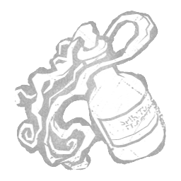 虚弱喘息 Fragile Wheeze |
精贵 | 从坎贝尔神父那里偷来的呼啸喘息声。在护士的触碰下无声地弯曲回旋。被特殊攻击击中的逃生者会遭受“重伤”状态效果，持续70秒。 | 女护士 |
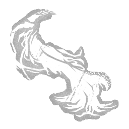 芬芳发缕 Fragrant Tuft of Hair |
罕见 | "一簇被人用力从头皮上扯下的金发。散发着女性花香的气息。" 在邪恶附身期间，适用以下效果：逃生者获得暴露状态效果。突进距离增加 +50%。禁用屠宰重击能力。 | 变形者 |
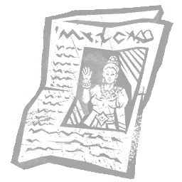 装框报纸 Framed Newspaper |
精贵 | "她曾登上本市报纸的娱乐版，但她想要更多。" 修改“Headlong Flight”并附加以下效果：其充能容量增加 +6 充能。其充能恢复速率提高 +15%。其激活阈值提高至 50%。 | 浮屠鬼 |
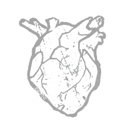 弗兰克的心 Frank's Heart |
精贵 | 弗兰克跳动的心脏，因他兄弟的鲜血而获得生命。传送门的最大施放距离增加8米。“没人能逃离我们。”——针头 | 地牢修女 |
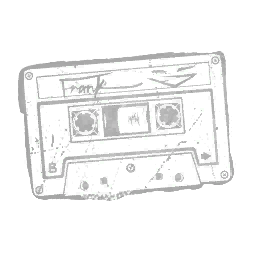 弗兰克的混音带 Frank's Mix Tape |
传说 | 执行击杀任务时切勿没有音乐相伴。一份由强烈失真与刺耳鼓点构成的曲目，直刺你的鼓膜。狂野狂暴期间，你获得以下效果：使用破坏或伤害动作时，暂停动力表的消耗。修理电机的动作速度 +20%。破坏可破坏墙的动作速度 +30%。解锁恐惧范围内额外的一层音效。弗兰克的混音带可与任意其他混音带附加品组合，解锁多重音效层组合。 | 军团 |
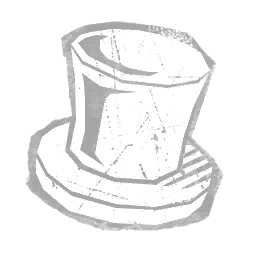 弗雷迪的帽子 Freddy's Hat |
精贵 | 加百列信错了大人，现在他成了舞台上的主角。增加消防斧的抛掷力度：消防斧重量增加 +100%。 | 机械人偶 |
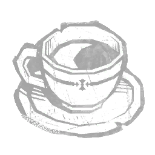 新鲜咖啡 Fresh Coffee |
传说 | 每只喰种最爱的饮品，也是他们唯一能食用的人类美味。赫子跃击期间的移动速度增加+2米/秒。 | 食尸鬼 |
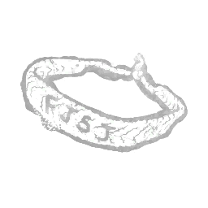 友谊手链 Friendship Bracelet |
稀有 | 一条宽大的灰红相间编织绳手环，其上用粗黑墨水潦草地写着粗体字母「F. J. S. J.」。野性挥击的突进持续时间 +0.3秒，从而提升你的攻击距离。 | 军团 |
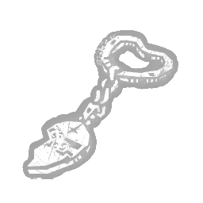 友谊护符 Friendship Charm |
稀有 | "上面曾经刻着的首字母，已被某人的拇指磨去了。" 为钥匙带来以下效果：其使用次数增加 +1 次。 | |
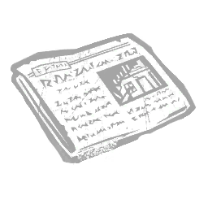 头版报道 Front-Page Article |
精贵 | “袭击者在木屋墙壁上撕开了几个大洞，并把一家人赶进了树林。”每当你破坏可破坏墙壁或 | 未知者 |
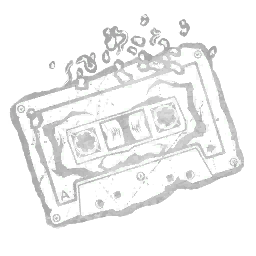 冒烟混音带 Fuming Mix Tape |
活动 | 来自另一个世界的阴暗节拍、暴烈失真与深不可测的嗓音，赋予你振动的第六感。狂野狂暴期间，电机的光环强度会使所有部分修复的电机开始倒退。解锁恐惧范围内额外的一层音效。怒号混音带可与任意其他混音带附加品组合，解锁多重音效层组合。 | 军团 |
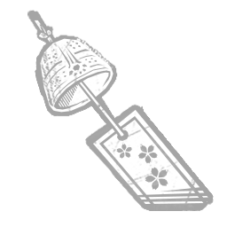 风铃 Furin |
传说 | 温暖的夏日微风轻轻摇响挂在阳台天花板上的小铃铛。使所有逃生者都能听到相位行走的音频提示。 | 怨灵 |
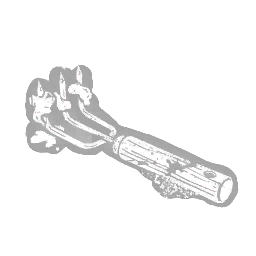 园艺爪 Garden Claw |
稀有 | 「既能用来挖杂草，也能用来刨人肉。」使惊吓后的杀手直觉持续时间增加2秒。 | 杀戮者 |
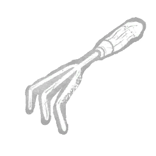 花园耙 Garden Rake |
稀有 | 一把小巧的爪形耙子，是任何熟练园丁的必备工具。使梦境陷阱的尺寸增大 +10%。 | 梦魇 |
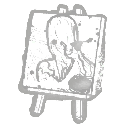 腐朽花园 Garden of Rot |
活动 | 一幅裸体自画像，卡米娜在其中描绘了从体内向外蔓延的腐烂黑暗。驱散鸦群后的4秒内，逃生者受到危险状态效果影响。「在腐烂中我看不到救赎。」——卡米娜·莫拉 | 艺术家 |
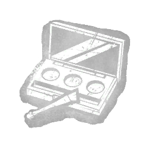 花哨化妆包 Garish Make-Up Kit |
传说 | 一部分涂于面部，一部分用作解毒剂。这种未知化合物会强化解毒剂的效果。改装解毒剂后获得以下效果：使振奋效果的持续时间增加 +2 秒。 | 小丑 |
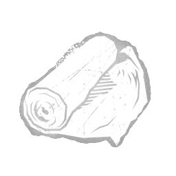 纱布卷 Gauze Roll |
精贵 | 适用于多种伤口的无菌纱布，属于完整伤口护理系统的一部分。可用治疗充能增加 +10。 | |
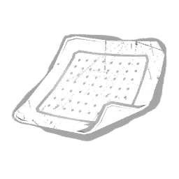 凝胶敷料 Gel Dressings |
活动 | 一包用于修补大量渗液伤口的凝胶敷料垫。可用治疗充能增加 +16。 | |
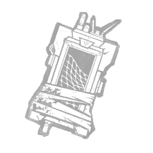 地理信息读出 Geographical Readout |
传说 | 无人机生成并传输地形的详细三维地图，让移动更加轻松。部署无人机后的 8 秒内，破坏可破坏墙壁、木板、发电机、窗户的动作速度提高 +20%。 | 骷髅商人 |
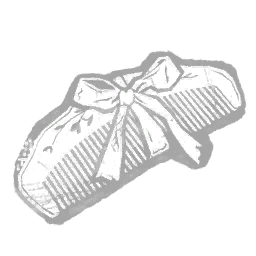 赠予的竹梳 Gifted Bamboo Comb |
稀有 | 一把细齿竹梳，用于轻柔梳理凌乱的头发。山冈的作祟的充能速度提升+15%。 | 怨灵 |
| 玻璃义眼 Glass Eye | 罕见 | 一种用于施放侦测法术的材料成分。强化驱散法球咒术，获得以下效果：半径增加+2米。飞行速度提高+10%。 | 巫妖 |
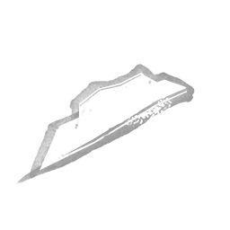 玻璃碎片 Glass Fragment |
罕见 | "一小块有色玻璃，可能来自破碎的物体。无法确定其来源。" 修改屠杀打击，附带以下效果：屠杀打击的移动速度+5%。屠杀打击的充能速度-10%。 | 变形者 |
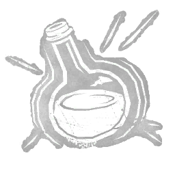 发光药剂 Glowing Concoction |
传说 | 一种散发着不祥微光的异界药剂。被飞斧击中的逃生者其气场会暴露5秒。 | 女猎手 |
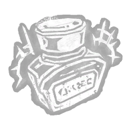 发光墨水 Glowing Ink |
稀有 | 有些图像仿佛直接从页面上跃然而出。修改地图，获得以下效果：其揭示气场的持续时间增加 +2 秒。 | |
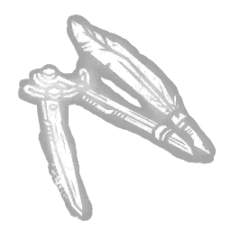 扭曲罗盘 Gnarled Compass |
罕见 | 它似乎每次都能自动设定到完美的距离。修改地图，获得以下效果：其充能次数增加 +2。 | |
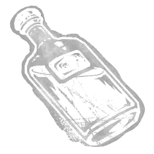 金溪威士忌 Gold Creek Whiskey |
传说 | 瓶中温暖慰藉，平息了卡莱布的怒火，也放慢了他的脚步。瞄准时，恐惧范围减少8米。“粗犷边陲的顺滑口感。”——金溪广告，1876年 | 死神之枪 |
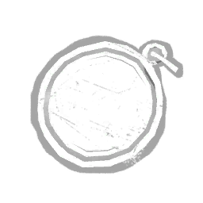 金色代币 Gold Token |
精贵 | 图标 描述 价格 此附加品已被下架（此解锁物品过去已被下架，在当前游戏中不再存在。）"一枚外观黯淡的金币。两面都被涂抹 | |
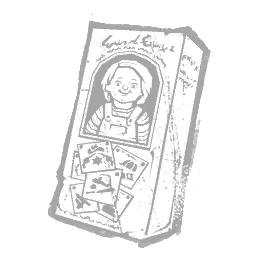 好人盒子 Good Guy Box |
稀有 | 有人一直留着这个箱子，以防哪天需要把娃娃送回商店退换。将「利刃与骰子」攻击成功的冷却时间缩短至其默认时长的 93%。 | 好人 |
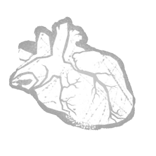 祖母的心脏 Grandma's Heart |
传说 | 食人村落长老的冰冷心脏。其中封存的生之精华激发了女巫力量的巨大潜力。每当逃生者触发幻影陷阱时，你将在其触发期间获得以下效果：压制你的恐惧范围；将泥人幻影的虚假恐惧范围增加 +16 米。「再给我切一片那女孩的肉。」——奶奶 | 女巫 |
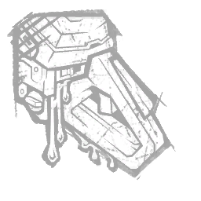 润滑节流阀 Greased Throttle |
罕见 | 润滑过的扳机。手指轻轻一动，电锯便重获新生。当不在超载状态时，使用电锯后的冷却时间减少 -5%。 | 电锯莽夫 |
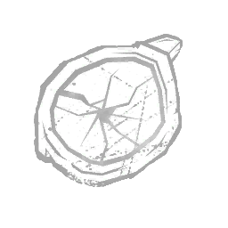 油腻黑镜片 Greasy Black Lens |
传说 | 一位肥胖地狱修士太阳镜的镜片，其肥肉褶皱垂在脸和脖子上。用被附身的锁链攻击命中逃生者后，显示其气场6秒。 | 地牢修女 |
| 油渍纸盘 Greasy Paper Plate | 稀有 | 它黏在碰到的一切东西上，用再多肥皂也洗不掉。当逃生者被嵌有消防斧时，遭受以下效果：拆除时间增加 +15%。 | 机械人偶 |
| 绿裙 Green Dress | 罕见 | 一条小女孩的绿色连衣裙，配着丝滑的白色缎带。使执行“唤醒”动作所需的时间增加 +2秒。 | 梦魇 |
| 草药 Green Herb | 传说 | 一种常见植物，以其修复特性而闻名。束缚途中与逃生者碰撞时施加的感染值增加+30%。 | 幕后黑手 |
| 阴森铁面具 Grim Iron Mask | 精贵 | 对护卫军团而言，没有什么酷刑手段过于卑劣。痛苦与羞辱形影不离。巡逻阶段被守卫侦测到的逃生者将受到致盲状态效果影响，持续75秒。 | 骑士 |
| 握力扳手 Grip Wrench | 精贵 | 一把握感牢固的可调扳手。任何工具箱中的必备品。被破坏的钩子的自动修复计时器增加20秒。 | |
| 骇人链条 Grisly Chains | 精贵 | 一条带有异常粗大切割齿的链条，即使目标伤势痊愈也仍会留有残疾。被布巴的电锯击中的幸存者会受到重伤状态效果，持续 70 秒。 | 食人魔王 |
| 粗砺块 Gritty Lump | 稀有 | 大多数日子里，一块硬邦邦的粗面包就能填饱他们的肚子，让他们有力气犯下真正十恶不赦的罪行。巡逻阶段期间守卫的移动速度提高9%。 | 骑士 |
| 枪火药 Gun Powder | 罕见 | 此附加品未使用，描述未知。使障目持续时间增加20%。 | |
| 火药罐 Gunpowder Tin | 传说 | 适用于各种爆破计划。在逃生者受到犬吠感知影响后，以下交互动作的速度提升 +30%，持续 20 秒：撞击可破坏墙壁、跨越木板、破坏发电机 | 猎犬主人 |
| 拆解超导晶体 Gutted Supercom | 罕见 | "一台失灵的通讯装置，如今总在最恐怖的时刻噼啪作响地苏醒。" 使用藤蔓攻击时，解锁你读取光环的潜力：在未进入破界模式的情况下，藤蔓攻击命中逃生者时会揭示其光环1.5秒。 | 先驱者 |
| 钢锯 Hacksaw | 精贵 | 一把装有金属切割刀片的小型手锯。工具箱破坏动作速度提升30%。 | |
| 哈迪的日历 Haddie's Calendar | 罕见 | 她本打算在父母带她前往印度之前，每天划掉一个日子，但当悲剧降临时，她放弃了她的日历。使从锁定的储物柜中退出的时间减少 -0.4 秒。 | 深潜者 |
| 赤铁矿印章 Haematite Seal | 罕见 | 以金属质硬石打造的圆柱形印章，其上刻有伫立于奇异机器旁的鸟首生物。被用作盛放圣灰的容器。被恶性净化击中的道具感染持续时间 +30 秒。 | 瘟疫 |
| 发带蝴蝶结 Hair Bow | 精贵 | "一条用来扎头发的蓝色格子呢缎带。" 修改恶灵化身，附带以下效果：恶灵化身的持续时间+20秒。追踪的力量速度-20%。 | 变形者 |
| 发刷 Hair Brush | 罕见 | "一把用来增加头发蓬松度和柔软度的尼龙鬃毛刷。" 当恶灵化身激活时，发刷触发其效果：下一个木板的作用速度+50%。 | 变形者 |
| 发胶与蜡烛 Hair Spray & Candle | 罕见 | 一团喷雾状的炼狱之火，保证你今天最不需要担心的只是发型问题。将「躲猫猫模式」下基础攻击的力量槽惩罚降低 20%。 | 好人 |
| 半个蛋壳 Half Eggshell | 罕见 | 一半完美圆形的中空蛋壳。将幻影陷阱的触发持续时间增加 +25%。 | 女巫 |
| 安全帽 Hard Hat | 活动 | 进行高强度活动时也能保住那颗完整的穹顶；可以瞬间撞碎身下的板车并疾行穿过。「真正的经典永不过时。」——娃娃 | 好人 |
| 鱼叉枪 Harpoon Gun | 传说 | 几乎算不上武器，只在万不得已的情况下才能使用。离开隧道后30秒内击中一名逃生者，会触发以下效果：使距离你所在位置16米以外的所有其他逃生者发出尖叫，并向你暴露他们的位置。 | 异形 |
| 头条剪报 Headline Cut-Outs | 稀有 | 剪报，收集了从犹他州到宾夕法尼亚州的未破谋杀案报道。而鬼面刚刚撰写了其中几篇头条——所有的案子都是他犯下的。累积你的成功记录会让你深感自豪，并增强你的自信。潜行时，移动速度提升+40%。 | 鬼脸 |
| 治愈药膏 Healing Poultice | 传说 | 他们的名声如此显赫骇人，单单是得知他们即将到来，就足以让人们屈膝臣服。召唤“刺客”会产生以下效果：其出生位置周围8米内逃生者的气场向你暴露8秒。 | 骑士 |
| 治疗药膏 Healing Salve | 稀有 | 一种气味辛辣刺鼻的糊剂，由捣碎的根茎调制而成——这些根茎在鱼卤中腌渍了三天，又在葡萄酒中浸泡了两天。涂抹于皮疹之上。恶性净化与腐化净化的冷却时间 -0.25 秒。 | 瘟疫 |
| 重型电池 Heavy Duty Battery | 罕见 | 一块标有“工业级”的电池。电池使用时间增加 +4 秒。“一块号称可持续使用 8 小时的电池，在黑雾中只能撑上几秒钟。” | |
| 沉重喘气 Heavy Panting | 精贵 | 缓慢而鼓胀的呼吸，取自 asylum"胖秩序员"哈维·卡瓦纳。在护士的触碰下微微颤动。将特殊攻击的突进距离延长至110%，使你的攻击范围增加+10%。此效果仅在第二次或第三次闪现后生效。 | 女护士 |
| 重水 Heavy Water | 稀有 | 为冷冻与生命维持系统供能的微型裂变反应堆的副产品。即便只是极小的泄漏，也会给舰载传感器带来灭顶之灾。侦测补给箱的光环侦测范围-8米。 | 奇点 |
| 直升机操纵杆 Helicopter Stick | 传说 | 直升机坠毁的残骸。当威斯克牵扯其中时，很少有工作比直升机飞行员更危险。使用急救喷雾后，逃生者气场暴露8秒。 | 幕后黑手 |
| 地狱郡铁器 Hellshire Iron | 活动 | 地狱郡帮的烙铁。与传说相反，它从未用于新入帮者，而是用来烙烫特别难缠的悬赏目标。当逃生者被救赎者的鱼叉刺中时，赋予不可侦测状态。该效果持续10秒。“地狱郡帮：正义追寻者还是法外之徒？”——《格伦威尔公报》头条 | 死神之枪 |
| 招聘广告 Help Wanted Ad | 稀有 | 我们每个人偶尔都需要一点帮助……在投掷消防斧蓄力时，获得以下效果：显示消防斧的初始抛掷轨迹。 | 机械人偶 |
| 异教徒之印 Heretic's Mark | 稀有 | “偏离正道之人，一旦受印，必将永遭摒弃。”——（论异端之三，第3章）发射的“神圣之光”在未击中逃生者的情况下从其1米范围内经过时，该逃生者将被“杀手本能”暴露2秒。 | 审判 |
| 永雾的耳机 Hide's Headphones | 罕见 | 它们属于他最好的朋友，他曾不惜一切代价保护她。受赫子标记影响的逃生者在携带标记期间承受以下效果：在标记移除前陷入浑然不觉状态。 | 食尸鬼 |
| 高刺激电极 High Stimulus Electrode | 精贵 | 一种实验性电极，能够长时间承受极高电荷。使冲击疗法攻击的影响范围扩大+4米。 | 医生 |
| 大电流升级件 High-Current Upgrade | 稀有 | 电阻更低的加宽线缆，可加快电池充电速度。雷达追踪持续时间增加 +1 秒。 | 骷髅商人 |
| 高端蓝宝石镜片 High-End Sapphire Lens | 传说 | 一片由防刮蓝宝石制成的宽镜片，可优化光束的威力与射程。光束射程增加 +25%。光束亮度增加 +30%。成功致盲的持续时间增加 +15%。光束宽度减少 -25%。 | |
| 高功率泛光灯 High-Power Floodlight | 稀有 | 一道突然而强烈的光线会让任何胆敢靠近的蠢货感到晕头转向。被爪夹陷阱夹住的逃生者会受到致盲状态效果的影响。 | 骷髅商人 |
| 高速惰轮螺丝 High-Speed Idler Screw | 罕见 | 一颗松动的螺丝将为电锯带来更大的动力。超频表的衰减延迟增加30%。 | 电锯莽夫 |
| 雏实的伞 Hinami's Umbrella | 罕见 | 她母亲被残忍夺走的那天正下着雨。每次完美时机的抓取攻击为倒计时额外增加10秒。 | 食尸鬼 |
| 全息生成器 Hologram Generator | 精贵 | 最初用于通讯与娱乐，如今被改作混淆视听之用。传送到滑流中的逃生者身上后，会使其陷入遗忘状态60秒。 | 奇点 |
| 神圣双翼圣像 Holy Winged Icon | 精贵 | “将它紧抱在胸前祈祷，以免你的心在它面前显得不忠。”——（《论异端》第二卷，第14章）在施放「神圣之光」时，按下次要力量按钮，可将其朝你的位置施放回来。以此方式施放时：造成伤害并施加「异端」前的最短延迟设为0.4秒。其最大速度提升+10%。它只伤害「异端」者。 | 审判 |
| 自制面具 Homemade Mask | 传说 | “杀手在后院的棚屋里制作了面具，太阳下山后他会把其他人带到那里。”成功执行驱散动作的逃生者将受到以下效果：施加60秒的致盲状态效果。 | 未知者 |
| 自制消音器 Homemade Muffler | 罕见 | 一套用黑色煤气管临时拼凑的排气系统。将暴走状态的持续时间减少 -0.5 秒。 | 食人魔王 |
| 皂荚刺 Honey Locust Thorn | 精贵 | 因一名曾两次逃脱的悬赏目标而愤怒，卡莱布将荆棘枝条缠在鱼叉上并将其射出。被救赎者刺中后挣脱的逃生者会受到重伤状态影响，持续70秒。 | 死神之枪 |
| 磨刀石 Honing Stone | 传说 | 与捕兽夹一同使用时，这块石头会磨利其刀刃。锋利无比的刀刃会切出深 wounds伤口，力求让受害者尽快流血不止。逃脱捕兽夹的逃生者将被施加濒死状态 | 设陷者 |
| 超级意识喷雾 Hyperawareness Spray | 精贵 | 船员们在长时间轮班时使用，以避免注意力涣散。过度使用的副作用包括偏执，极端情况下还会产生幻觉。使所有被时空滑流影响的逃生者听到一个虚假的附近恐惧范围。 | 奇点 |
| 催眠师的怀表 Hypnotist's Watch | 精贵 | “催眠疗法被推荐用于恢复被压抑的记忆。从他脑海中浮现的东西将导致他的毁灭。”被空中UVX投射物击中的逃生者将受到以下效果：施加15秒的疲惫状态效果。 | 未知者 |
| 穿刺铁丝 Impaling Wire | 传说 | 一根刺穿地狱修士脸颊的金属丝，同时露出她脖子上的裂伤。当被束缚的逃生者利用环境破坏锁链时，额外生成一条锁链。 | 地牢修女 |
| 压印铝片 Imprinted Aluminum | 精贵 | 要么是先锋派艺术品，要么是一个女人被脸砸上去后留下的惊恐印记。用投掷尖刺击中正常状态的逃生者时，使其陷入撕裂出血状态效果，持续 70 秒。 | 杀戮者 |
| 临时电击棒 Improvised Cattle Prod | 活动 | 一件粗暴而嘈杂的武器，用来对付奶牛或许更有效。每当一台发电机15秒：效果激活期间，10米内控制站的气场将向你显示15秒。 | 异形 |
| 临时起爆器 Improvised Detonators | 传说 | “像懦夫一样，他们在夜间用炸弹偷袭，生怕白昼之光照亮他们漆黑的灵魂。”——（《见证科恩拉德》，第35章）若没有逃生者死亡，将钩子状态最少的逃生者放逐至流放地可获得+1印记。达到4个或更多印记时，发电机-20%进度并开始倒退。 | 审判 |
| 焚香药膏 Incensed Ointment | 精贵 | 一种深色的蜡质糊剂，掺入了雪松树脂，散发着香甜而带有泥土气息的芬芳。直接涂抹于受感染的皮肤上。摄入腐败（Corruption）会使你恐怖半径内的所有逃生者 | 瘟疫 |
| 步兵腰带 Infantry Belt | 传说 | 一条从士兵身上掠夺来的结实工具腰带。他在战斗中身手敏捷，但她更快。用飞斧成功命中逃生者可获得+3%急速状态效果，持续5秒。 | 女猎手 |
| 感染催吐剂 Infected Emetic | 精贵 | 一剂来源不明的令人作呕的糖浆。饮用这种浓稠的黄色液体以催发呕吐。用以将邪恶从体内驱逐出去。恶性净化提供的感染量 +40%。 | 瘟疫 |
| 狱火线 Inferno Wires | 稀有 | 烧焦的电线组成了那场席卷录音棚的大火，NO SPIN 五名成员中有四人殒命。他们的死亡催生了「恶作剧者」。使 S 段位衰减时间增加 20%。 | 小丑女 |
| 红外升级件 Infrared Upgrade | 精贵 | 热感应摄像头会精准锁定高度紧张的人。被爪夹陷阱夹住的逃生者移除爪夹陷阱后，其气场会向你显示4秒。 | 骷髅商人 |
| 墨蛋 Ink Egg | 传说 | 一枚奇特的蛋，看起来不过是一团半固态的墨水。可召唤的厄鸦数量增加+1只。闲置厄鸦消散前的计时器减少-2秒。「也许，像我这样被黑暗覆盖的它们，把我看作了同类。」——卡米娜·莫拉 | 艺术家 |
| 墨狮 Ink Lion | 罕见 | 一幅曾悬挂于山冈宅邸的水墨画。描绘了狮子被老鼠吞食的寓言故事。减少进入血之狂怒的过渡时间 -0.5 秒。减少退出血之狂怒的过渡时间 -0.5 秒。减少血之狂怒期间击倒逃生者时受到的力量槽惩罚 -2 秒。 | 鬼武者 |
| 说明书 Instructions | 稀有 | 有人在这块树皮上匆匆画下了似乎是修理说明的图案。修理发电机/工具箱时，你获得以下效果：抑制所有常规修理技能检验。这不会影响任何特殊技能检验。 | |
| 高强度卤素灯 Intense Halogen | 精贵 | 一只化学灯泡，能发出极为通透的强光。光束亮度增加 +40%。成功致盲的持续时间增加 +20%。 | |
| 连锁剃刀 Interlocking Razor | 稀有 | 对逆向捕兽夹的改造：加装联锁剃刀刀片后，在拼图盒中突然移动就难免割伤手腕。受伤状态下，逃生者在拼图盒技能检验失败后会受到深度伤口状态效果影响。 | 猪女 |
| 访谈录音带 Interview Tape | 精贵 | 来自觉醒计划的一盘袖珍录音带，内含一段未经剪辑的受害者访谈。打开了医生的思维，使其接受另类治疗方法。将冲击疗法攻击的影响范围从锥形重塑为宽2米、长24米的狭窄光束。 | 医生 |
| 虹彩护符 Iridescent Amulet | 活动 | 一枚在领域内重现的强大吊坠。将「躲猫猫模式」的持续时间延长 50%。基础攻击会立即结束「躲猫猫模式」。「如果我不能尽快从这具身体里出去，我就彻底完了。」——娃娃 | 好人 |
| 虹彩枯萎标签 Iridescent Blight Tag | 活动 | 一个玻璃般的实验室标签，由迷雾本身铸成。要么是来自恶灵的礼物，要么是对枯萎者的残酷嘲讽，就像他曾经给其他人贴标签一样。枯萎腐化上限为3层。冲刺期间移动速度提高 +10%。冲刺期间最大视角提高 +20°。“进步需要剧烈的改变。”—— 塔尔博特·格莱姆斯 | 枯萎者 |
| 虹彩船外机 Iridescent Boat Motor | 活动 | 刀刃残缺破裂，仿佛切过什么坚硬的东西。在“无所不在的邪恶”状态下穿过窗户会标记它们13秒。执行一次惊吓跳跃会封锁所有被标记的窗户13秒。 | 杀戮者 |
| 活动 | 集残忍、邪恶与堕落之大成的终极咒典。每当你使用飞行咒术穿过一扇窗户时，封锁该窗户，对所有逃生者持续45秒。强化诅咒飞行咒术，获得以下效果：飞行实体的飞行高度降低-0.7米，使其也能伤害蹲伏中的逃生者。咒术召唤的飞行实体数量减少3个。“面对我数世纪的精心准备，你有何胜算？”——维克那 | 巫妖 | |
| 虹彩纽扣 Iridescent Button | 活动 | 一枚由雾铸成的玻璃质感按钮，上面刻着「军团」的样貌。表面温热，并回荡着实体的力量。使野性翻越能够立即破坏翻越的 pallets 木板。「被这虹彩玻璃吞噬的少年，放大并拓展了实体的触及范围。」 | 军团 |
| 虹彩硬币 Iridescent Coin | 活动 | 一枚由迷雾本身凝成的玻璃般硬币。是付给这位赏金猎人的服务报酬。若从至少12米外开枪命中，被救赎者刺中的逃生者将受到危肋状态影响。“绝望中达成的交易，将以疯狂作为代价。” | 死神之枪 |
| 活动 | 这面旗帜竖起之处，那些自诩"文明"的人四散奔逃、藏匿躲藏，因为在他们的种种法典与律令之下，他们没有任何近似于真正力量的东西。召唤守卫后，所有窗户巡逻路径对所有逃生者封锁 25 秒。狩猎期间，被猎杀的逃生者翻越过的所有窗户对其他所有逃生者封锁。狩猎期间，出口大门对被猎杀的逃生者封锁。"他们像寄生虫一样蜷缩在自己的村子里！他们已经失去了对权力的渴望。"——塔尔霍什·科瓦奇 | 骑士 | |
| 虹彩水晶碎片 Iridescent Crystal Shard | 活动 | 来自外星结构的水晶，赋予其知觉。新放置的生物舱周围10米内的气场会向你显示6秒。“你好，世界。”——HUX-A7-13 | 奇点 |
| 虹彩雕刻 Iridescent Engravings | 活动 | 电锯机身上的雕刻，代表着迷雾中存在的黑暗野兽。令使用者充满决心。电锯冲刺期间的移动速度提升 +20%。电锯的充能时间增加 +12%。 | 电锯莽夫 |
| 虹彩眼罩 Iridescent Eye Patch | 活动 | 一种向世界隐藏其真实天性的天真方式。在狂暴状态下，第三次连续赫子跳跃时解锁潜能：如果用于翻越已放下的木板 | 食尸鬼 |
| 虹彩家纹 Iridescent Family Crest | 活动 | 一枚表明其主人身为山冈家一员的纹章。当你的恶魔重击落空、击中地面时，会使24米内的逃生者惊叫并向你暴露自身位置。"知汝是谁，方可守护汝之心。"——廉次郎教条 11:2 | 鬼武者 |
| 虹彩羽毛 Iridescent Feather | 活动 | 用迷雾本身铸成的玻璃状羽毛。尽管简朴，却是守护卡米娜之人的象征。当痛苦之鸟处于冷却且你没有持有厄运乌鸦时，获得不可侦测状态效果。可召唤的厄运乌鸦数量减少1只。“在我无法自救时，他们救了我。”——卡米娜·莫拉 | 艺术家 |
| 虹彩血肉 Iridescent Flesh | 活动 | 一片光滑的年轻肉片。血管闪烁着微光，仿佛生命仍在其中流动。用巴布的电锯击中逃生者后，立即充能所有能量印记。将暴怒的最大持续时间减少至3秒。“有些时刻，我们无法相信正在发生的事是真的。掐自己一下，你可能会发现它确实如此。”——帕姆·琼斯 | 食人魔王 |
| 虹彩斧头 Iridescent Head | 活动 | 由迷雾本身铸成的玻璃状斧头。刀刃温暖，回荡着恶灵的力量。被飞斧命中的逃生者会直接被投入濒死状态。可携带的飞斧数量减少至1把。“虹彩玻璃切开血肉与灵魂。” | 女猎手 |
| 虹彩王 Iridescent King | 活动 | 一件由迷雾本身铸成的玻璃质感国王棋子。其中回荡的恶灵痕迹足以击溃最强大的心智。受到疯狂影响的逃生者将同时遭受平静、自律、秩序和克制的痛苦：逃生者会间歇性地听到远处传来的幻象恐惧范围。在追逐中，逃生者会感知到幻象红光和恐惧范围，仿佛你一直紧随其后。疯狂II：此效果在追逐结束后持续6秒。疯狂III：此效果恒定存在，无论逃生者是否在被追逐。被破坏的木板会被随机替换为倒下或竖立的幻象木板，直至逃生者靠近后才消失。每20秒生成新的幻象木板。幻象医生的持续时间增加+6秒。你可以共享患者的疯狂，并看到幻象医生、红光和木板。“凝视这虹彩玻璃，即是让自己沉沦于疯狂。” —— 赫尔曼·卡特 | 医生 |
| 虹彩哀悼盒 Iridescent Lament Configuration | 活动 | 用迷雾本身铸成的玻璃状魔方。这个复制品与原版不同，赋予全新的力量。在锁链狩猎外，可屏蔽距离它24米内哀悼魔方的气场。“你打开了它。我们来了。”——针头 | 地牢修女 |
| 虹彩OSS报告 Iridescent OSS Report | 活动 | “这份报告被删改得面目全非，已毫无意义。但理论家们仍试图从中解读出意义。” 对 UVX 施加以下效果：传送技能的冷却时间减少 5 秒。幻影的存在时间增加 10 秒。使幻影散发恐惧半径的红色痕迹。 | 未知者 |
| 虹彩吊坠 Iridescent Pendant | 活动 | 由迷雾本身塑造的玻璃状吊坠。上面有玛德琳·德谢的肖像，只是画中她的神情有些令人不安。夏洛特在操控时，踩碎维克多会使该逃生者受到暴露状态效果影响，持续45秒。“你们的束缚不是诅咒，亲爱的。那是你们可以依靠的力量。”——玛德琳·德谢 | 双胞胎 |
| 虹彩照片卡 Iridescent Photocard | 活动 | 一张由迷雾本身塑造的玻璃般的照片。智勋咧嘴的脸上，双眼闪烁着全息般的光芒。使主事件持续时间增加 +100%。激活主事件时，向逃生者显示你的气息，向你显示所有逃生者的气息，并封锁所有发电机 6 秒。 | 小丑女 |
| 虹彩后 Iridescent Queen | 活动 | 一件由迷雾本身铸成的玻璃质感皇后棋子。触碰它不可能不受到强烈的电击。被冲击疗法攻击或静电爆炸击中的逃生者会带有残余的静电荷，除非他们处于另一名逃生者4米范围内：静电荷会一直留在逃生者身上，直到被释放。带有电荷的逃生者进入另一名逃生者4米范围内时，会触发一次自动的冲击疗法攻击，电击双方并自动释放所有剩余的静电荷。“一旦我们确立了有效的治疗方法，我们便可以专注于高效的施放手段。” —— 赫尔曼·卡特 | 医生 |
| 虹彩残像 Iridescent Remnant | 活动 | 熔融金属——掌握在正确的手中，就是不朽的钥匙。当前往安保门时，对其施加以下效果：阻挡该安保门前 12 米内的所有竖立板条，持续 12 秒。 | 机械人偶 |
| 虹彩弗拉德之戒 Iridescent Ring of Vlad | 活动 | 德古拉拥有的独特遗物。据说没有它，任何人都无法接近黑暗领主。修改地狱火攻击，效果如下：使火焰之柱追踪附近的逃生者。“废话少说……接招吧！”——德古拉 | 黑暗领主 |
| 虹彩印章 Iridescent Seal | 活动 | 由雾境本身塑造而成的半透明圆柱形印章，其上留有瘟疫的肖像。其表面温热，并随实体的力量而搏动。每当发电机被维修时，自动进入腐化净化。腐化净化持续时间 -20 秒。 | 瘟疫 |
| 虹彩梅塔特隆封印 Iridescent Seal of Metatron | 活动 | 一枚刻有奇异图案的护身符。实体的影响似乎已改变了它。修饰设陷者之惩，产生以下效果：基础范围降低 -50%。在施放折磨轨迹期间，其范围会逐步增加，最高可达 +200%。此效果会在设陷者之惩命中逃生者后重置。“这道具有强大防护与破邪功效的魔法阵，被称为‘Virun VII 纹章’，亦即‘梅塔特隆之印’。” | 刽子手 |
| 活动 | "一枚曾限制他力量的芯片，如今却成了更加强大力量的源泉。" 作用于破界，具有以下效果：激活时，赋予不可探测状态效果，且12米内逃生者的破界标记光环会向你揭示。此效果持续至你施展藤蔓攻击、进入颠倒世界，或破界结束时。 | 先驱者 | |
| 虹彩石 Iridescent Stone | 活动 | 用那块泛着病态光泽的石头磨利过的捕兽夹，似乎获得了自己的生命。每30秒自动重置并武装一个随机已被拆除的捕兽夹。 | 设陷者 |
| 虹彩雨伞徽章 Iridescent Umbrella Badge | 活动 | 一枚由迷雾本身铸造的玻璃质感徽章。它代表着一家远远超越伦理和人性科学界限的企业。逃生者在使用疫苗后的 60 秒内受到暴露状态效果影响。“承诺、诚实、正直。这些是构成安布雷拉公司基石的核心理念。”——马特·戈基斯博士 | 复仇女神 |
| 虹彩未刊手稿 Iridescent Unpublished Manuscript | 活动 | 在Adriana失踪之前，她的父亲已经开始创作一部更新、更黑暗的漫画：《Sonhadores Sombrios》。每当任意一个无人机关闭时，你获得以下效果：获得无法侦测状态效果，持续15秒。被关闭的无人机发出恐惧范围32米，持续15秒。“当邪恶横行时，它无法逃脱Adi Valente的制裁！”——摘自《Adi Valente》第1期封面。 | 骷髅商人 |
| 虹彩衔尾蛇小瓶 Iridescent Uroboros Vial | 活动 | 完美的生化武器。数十年的研究造就了它。使所有逃生者在开局时即感染衔尾蛇病毒。逃生者达到重度感染时，遭受危险状态效果30秒。“整个世界都将被感染。新的创世纪即将来临，而我将成为造物主！”——阿尔伯特·威斯克 | 幕后黑手 |
| 虹彩录像带 Iridescent Videotape | 活动 | 封存着贞子诅咒的原始录像带。电视机在被破坏后，投影将不再使其关闭。逃生者关闭电视机后，其重新开启所需时间+20%。「那段影像……不属于这个世界。那是贞子的愤怒。」——高山龙二 | 般若 |
| 虹彩舵轮柄 Iridescent Wheel Handle | 活动 | 曾用于引导一艘巨轮横渡公海，如今其残骸仅作往昔岁月的见证。搜查指令目标位置处猎犬的逗留持续时间增加 +20%。猎犬执行搜查指令期间，获得无法侦测状态效果。以猎犬师身份触碰搜查路径会立即移除该状态效果。“无论是人还是风暴，我皆无所畏惧。”——波西亚·梅 | 猎犬主人 |
| 虹彩木板 Iridescent Wooden Plank | 活动 | 当记者的鲜血染上舞台的木板时，一切都为 dredge（德雷奇）的到来做好了铺垫。幸存者在夜幕降临的最后 12 秒内承受暴露状态效果。"她来这里，是要用恐惧毒害你们的心！不要让恐惧进入！"——奥托·斯坦珀 | 深潜者 |
| 铁匠钳 Ironworker's Tongs | 精贵 | 战间维修的必需品，同时也是一件可怕的、能 gauging 撕扯的即兴武器。狩猎期间，若守卫未能对逃生者造成伤害，逃生者将遭受茫然状态效果 60 秒。 | 骑士 |
| J·迈尔斯的纪念品 J. Myers Memorial | 精贵 | 从1965年哈登菲尔德高中毕业纪念册上撕下的一页光滑纸张，专门纪念朱迪思·迈尔斯。在“恶魔附身”状态下，获得以下效果：捡起和钩住逃生者的速度提高40%。 | 变形者 |
| 狱卒铃铛 Jailer's Chimes | 传说 | 许多俘虏因试图逃脱他的魔爪而落得同样的凄惨下场。狱吏的气场和巡逻路径会向你显示8秒。 | 骑士 |
| 占吉拉的手 Janjira's Hand | 精贵 | "她朋友残存的少数可辨认部位之一。" 每当一台发电机被修复时，“Janjira's Hand”触发其主要效果：使“ | 浮屠鬼 |
| 碎颌器 Jaw Smasher | 罕见 | 一颗在疯狂枪战中击穿卡莱布下颌的子弹。它唤起了炽烈的复仇渴望。瞄准时，你的移动速度增加1.5%。“你对不起我的那一刻，就是把死亡召到了家门口。”——卡莱布·奎因 | 死神之枪 |